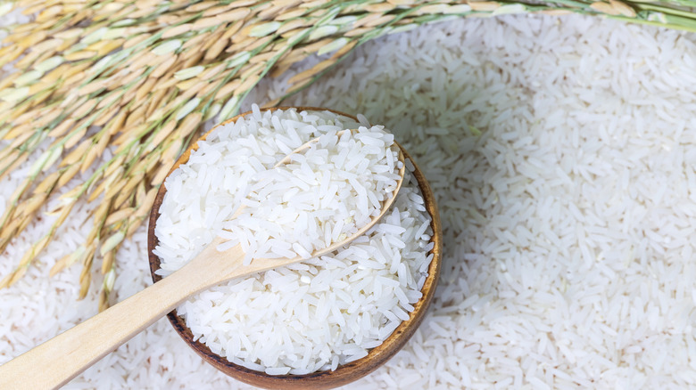

Insights and Stories Inspired by Kabul
The price of rice, a fundamental staple in Afghan diets, has seen a sharp increase in Kabul as of May 14, 2000, causing concern among local residents and policymakers. This surge is attributed to a combination of regional production shortfalls and increased market demand. Recent reports from Kabul’s main markets indicate that the price of rice has increased by as much as 30% over the past month. Local farmers point to poor harvests this season, exacerbated by unusually dry weather conditions that have affected much of Afghanistan’s agricultural land. “The fields haven’t been yielding as much as they used to. We are struggling to meet local demand, which has naturally driven the prices up,” explained Abdul Basir, a rice farmer from the outskirts of Kabul.
The price hike is hitting Kabul’s residents hard, particularly lower-income families for whom rice is an essential part of daily meals. “It’s becoming difficult to afford basic staples. Every trip to the market now costs significantly more,” said Farzana Wahidi, a mother of four, expressing the distress that many families are experiencing. Local officials are considering several measures to mitigate the impact on consumers, including the possibility of subsidizing rice prices or importing additional rice stocks from neighboring countries. “We are aware of the hardship this is causing and are looking into immediate steps we can take to ensure that our citizens can afford their basic needs,” commented a spokesperson from Kabul’s Municipal Economic Development Office. The situation has sparked a broader debate on food security in the region, with experts urging the government to invest in sustainable agricultural practices and improved water management systems to prevent similar crises in the future.